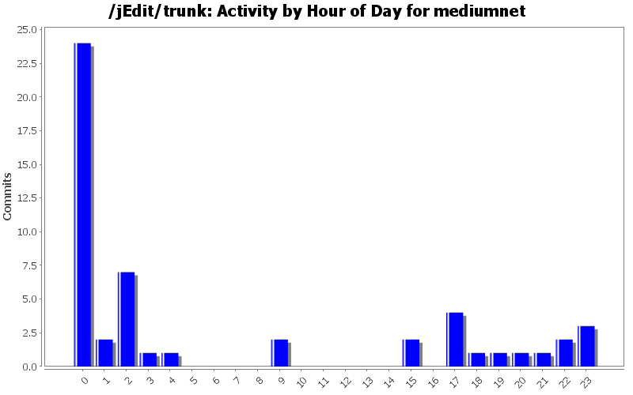
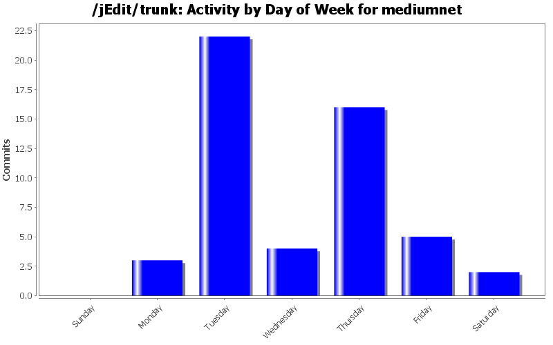
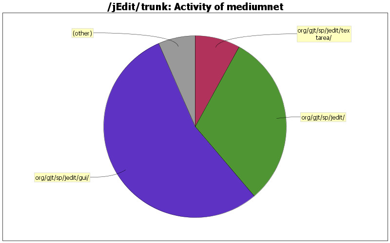

| Directory | Changes | Lines of Code | Lines per Change |
|---|---|---|---|
| Totals | 52 (100.0%) | 1083 (100.0%) | 20.8 |
| org/gjt/sp/jedit/gui/ | 20 (38.5%) | 592 (54.7%) | 29.6 |
| org/gjt/sp/jedit/ | 25 (48.1%) | 333 (30.7%) | 13.3 |
| org/gjt/sp/jedit/textarea/ | 1 (1.9%) | 87 (8.0%) | 87.0 |
| doc/ | 3 (5.8%) | 39 (3.6%) | 13.0 |
| org/gjt/sp/jedit/menu/ | 1 (1.9%) | 18 (1.7%) | 18.0 |
| org/gjt/sp/util/ | 1 (1.9%) | 13 (1.2%) | 13.0 |
| org/gjt/sp/jedit/search/ | 1 (1.9%) | 1 (0.1%) | 1.0 |

Make jEdit compile with Java 1.6 (get rid of error messages like "/root/work/jedit/svn2/jEdit/trunk/org/gjt/sp/jedit/jEdit.java:2983: reference to DefaultInputHandler is ambiguous, both class org.gjt.sp.jedit.textarea.DefaultInputHandler in org.gjt.sp.jedit.textarea and class org.gjt.sp.jedit.gui.DefaultInputHandler in org.gjt.sp.jedit.gui match").
5 lines of code changed in 3 files:
Some more radical keyboard handling changes...
106 lines of code changed in 4 files:
Disambiguate global key events from local key events
5 lines of code changed in 1 file:
Some infrastructure to disambiguate global key events from local key events
31 lines of code changed in 3 files:
More verbosity.
10 lines of code changed in 1 file:
Radical changes lead to regressions until a new optimimum is reached.
3 lines of code changed in 1 file:
Some more refactoring: removing code duplication.
18 lines of code changed in 1 file:
Some refactoring: removing code duplication.
43 lines of code changed in 1 file:
Some more radical changes in case of Debug.SIMPLIFIED_KEY_HANDLING==true . Maybe this fixes bug 1542026.
75 lines of code changed in 1 file:
Suggest some more verbosity if Debug.DUMP_KEY_EVENTS==true
2 lines of code changed in 1 file:
ortography
1 lines of code changed in 1 file:
Make org.gjt.sp.jedit.gui.GrabKeyDialog.toString() more verbose.
9 lines of code changed in 1 file:
Some comments on incompatibilities between xselection and jEdit.
16 lines of code changed in 1 file:
Introduce java.awt.datatransfer debugging.
15 lines of code changed in 1 file:
Make key event debugging more informative.
5 lines of code changed in 1 file:
Fixing bug 1511044 ( https://sourceforge.net/tracker/?func=detail&atid=100588&aid=1511044&group_id=588 ). There are still differences between old and new key handling regarding shortcuts, but it seems that these cases are only where shortcuts would be never used (e.g. represent Shift+A either als "A" (note that the 'A' is uppercase) or as "S+A").
35 lines of code changed in 1 file:
Fix wrong comment.
9 lines of code changed in 1 file:
Fix bug 1493185 ( https://sourceforge.net/tracker/?func=detail&aid=1493185&group_id=588&atid=100588 ).
58 lines of code changed in 2 files:
More on Java key handling bugs.
4 lines of code changed in 1 file:
Work around the indistinguishability between Ctrl+Enter and Ctrl+J key events at the "key typed" event stage.
64 lines of code changed in 1 file:
(22 more)